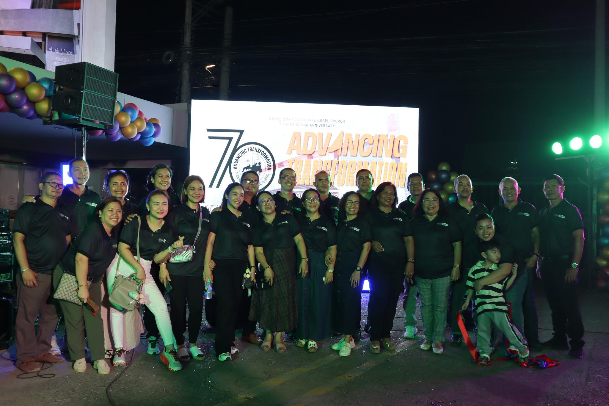
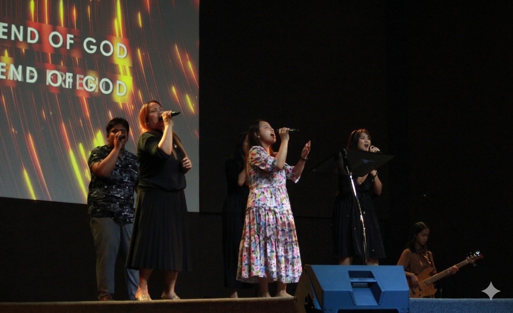

Who We Are
For 70 years we have been a family rooted in Scripture, bound by love, and called to serve. Every generation has added a new chapter to our story — and yours is still being written.

Our Story
The story of Davao City Foursquare Gospel Church (DCFGC) is a testament to faith, growth, and community. Beginning with early Pentecostal tent revivals in the 1950s, the movement found fertile ground in Mindanao’s "Land of Promise."
By the 1970s, the church fully nationalized under Filipino leadership, establishing its central home on Lopez Jaena Street. This mother church quickly became a spiritual engine for the region, accelerated by the founding of the Halls of Life Foursquare Bible College to train homegrown pastors.

Our Community
The community of Davao City Foursquare Gospel Church (DCFGC) is a vibrant, multi-generational spiritual family anchored at Lopez Jaena Street. Moving forward under the banner of "Advancing Transformation," our church serves as a sanctuary of hope, healing, and active fellowship across Davao City.

Our Worship
At Davao City Foursquare Gospel Church (DCFGC), worship is the vibrant heartbeat of our family. Rooted deeply on Lopez Jaena Street, our gatherings are a passionate celebration of God’s presence, where believers unite with lifted hands and sincere hearts to honor Jesus Christ as our Savior, Baptizer, Healer, and Soon-Coming King.
70 Years of Milestones
Period of Pioneering
the Foursquare movement was in its "Period of Pioneering" in the Philippines. While the primary base of operations was Calvary Foursquare Church in Manila (registered in 1949), American missionaries and passionate Filipino tentmakers began looking south.
Period of Consolidation and Phenomenal Growth.
the national church had grown to nearly 80 congregations nationwide. Crucially, the leadership realized that Mindanao was their most fertile ground.
Becoming Fully Filipino
Just two years prior, in 1973, the denomination made the historic move to nationalize, officially registering as the Church of the Foursquare Gospel in the Philippines (CFGPI) under its first Filipino president.
The Rise of Centralized Megachurches
the localized chapel model evolved into large, city-center "mother churches." The Davao City Foursquare Gospel Church on Lopez Jaena Street grew significantly during this decade, cementing its role as the administrative and spiritual center for the district.
50th Golden Jubilee National Convention of Foursquare Philippines.
the national Foursquare movement was experiencing explosive growth, expanding toward thousands of churches nationwide.
🎉 Leading the National Stage
Today, the Davao church is no longer just a regional powerhouse—it is actively shaping the national leadership of the entire denomination. The Senior Pastor of Davao City Foursquare Gospel Church, Rev. Daniel G. Feleo, serves as the National Vice President of CFGPI for the 2026–2028 term.
Mission, Vision & Core Values
Our Mission
Davao City Foursquare Gospel Church is committed to teach, train, and nurture every person in the Word of God, producing authentic disciples, actively involved in Evangelism, Discipleship, Leadership Development, & Mission's Outreach regardless of status and nationality to bring life transforming impact in the community and the next generation.
Our Vision
Well-equipped church engaged in intentional disciple-making, faithfully fulfilling the Great Commission for God's Glory!
Our Core Values
Spiritual Discipline: We value the Word of God and prayer. Wisdom of God: We value spiritual balance. Authenticity in lifestyle: We value stewardship, servanthood and integrity. Teamwork in Ministry: We value Partnership and Collaboration.
Service Schedule
First Service
Sunday · Main Sanctuary
A quiet, reflective start to worship.
Second Service
Sunday · Main Sanctuary
Our primary gathering for all families.
Third Service
Sunday · Main Sanctuary
Uplifting praise and relevant teaching.
Midweek Service
Wednesday · Fellowship Hall
Deep dive into Scripture together.
Young Professional Fellowship
Friday · Prayer Room
Corporate intercession and worship.
Children's Church
Sunday · Kids Wing
Age-appropriate teaching, ages 3–12.
We'd Love to Hear From You
Whether you're joining us for the anniversary celebrations or visiting for the first time, our doors — and hearts — are always open.
Address
Lopez Jaena St., Davao City, Philippines, 8000
Phone
(082) 227 4002
fgc.davao@gmail.com
Office Hours
Tuesday – Saturday: 9:00 AM – 5:00 PM